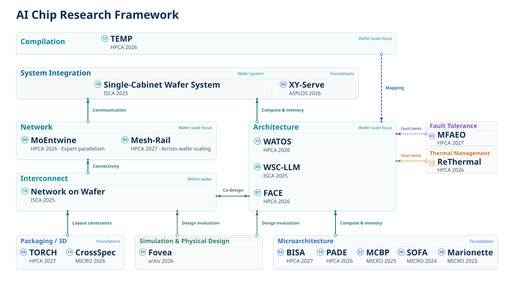

Research
Designing for the demands of AI.
AI systems need computation, memory, and communication to grow together. I investigate how parallel execution, workload mapping, and hardware organization shape scalable training and inference.
AI Chip Research Framework
Connecting architecture, communication, compiler mapping, physical integration, and design methodology around wafer-scale computing.


LLM Training and Inference
How should computation be parallelized and scheduled?
Large models place different demands on training and inference. I study parallel execution, scheduling, and load balancing in relation to memory capacity and communication cost.
Training strategies and architectural resources explored together.
Simulation study · HPCA 2026
Mapping communication and balancing experts for MoE inference.
Hardware profiling + simulation · HPCA 2026
Scheduling and meta-kernels for dynamic serving on Ascend NPUs.
NPU measurements in the linked preprint; formal publication title differs
Computer Architecture and AI Chips
How should compute, memory, and communication be organized?
I study architecture choices that help computation use available resources effectively, from control in spatial architectures to attention accelerators and wafer-scale resource organization.
Control-flow handling in spatial architectures.
RTL synthesis and simulation · MICRO 2023
Coordinating sparsity processing and attention computation.
RTL and simulation study · MICRO 2024
Compute, memory and communication resource trade-offs for training.
Simulation study · HPCA 2026
Mapping and Design Automation
How can workloads be mapped and designs evaluated?
This area connects workload requirements to implementation choices. It includes tensor partitioning and mapping, architectural exploration, and parameterized digital hardware generation. These are distinct research methods, with separate evaluations.
Tensor partitioning, topology-aware mapping, and search.
ASTRA-sim with Ramulator · HPCA 2026
A parameterized CGRA generator and pluggable hardware design flow.
HDL generation, simulation and synthesis · 2023 preprint